僕の推しの伊達さゆりさんの1stワンマンライブに参加しました。
六本木駅。
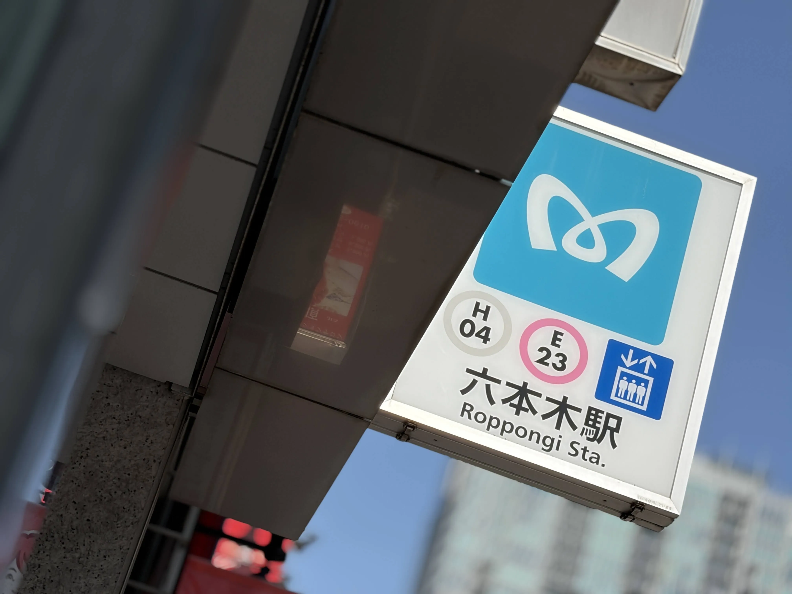
会場までは駅から10分ぐらい歩きました。
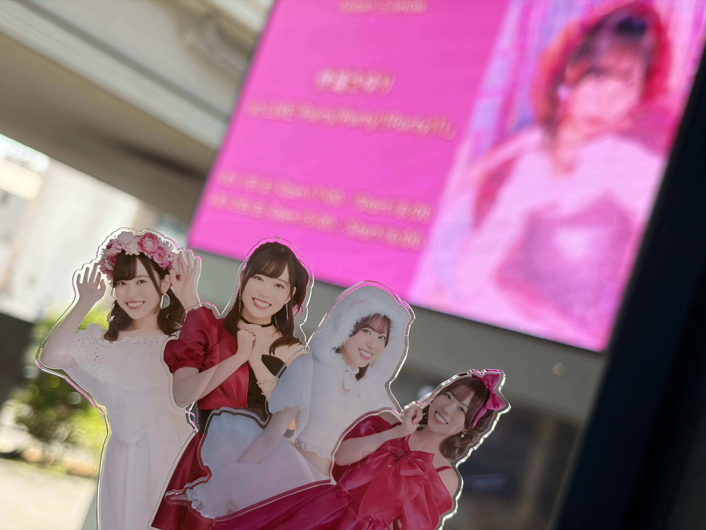
事前に予約していたコンプリートセットのグッズを受け取りに。
…この名前、知っている…。
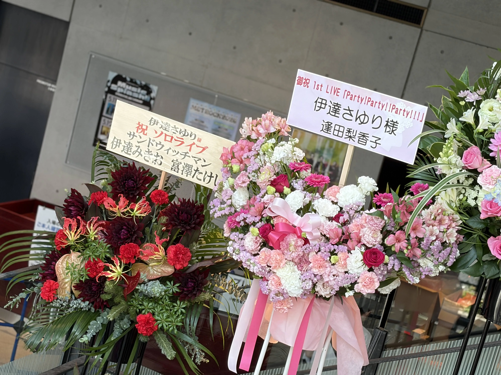
グッズの展示もされていました。
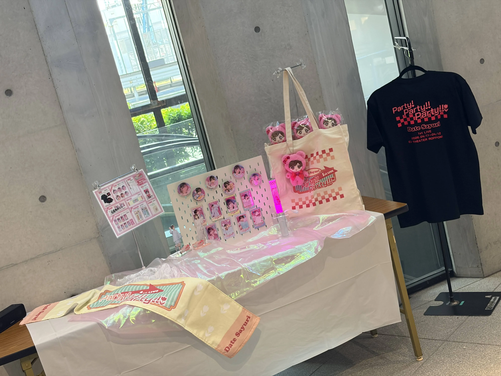
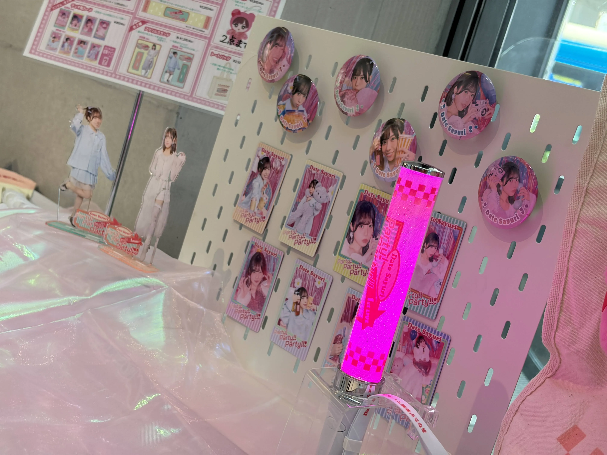
ヲタクと開演前にアクリルスタンドを並べて遊んでいました
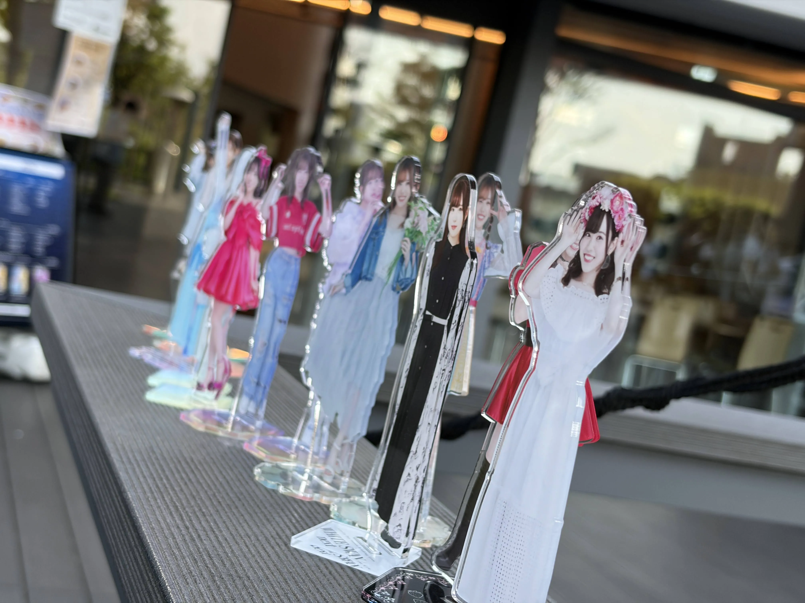
今回受け取ったコンプリートセットのグッズですね。買うか迷っていたのですが、開演前にグッズ販売列へ並びたくなかったため購入しました。
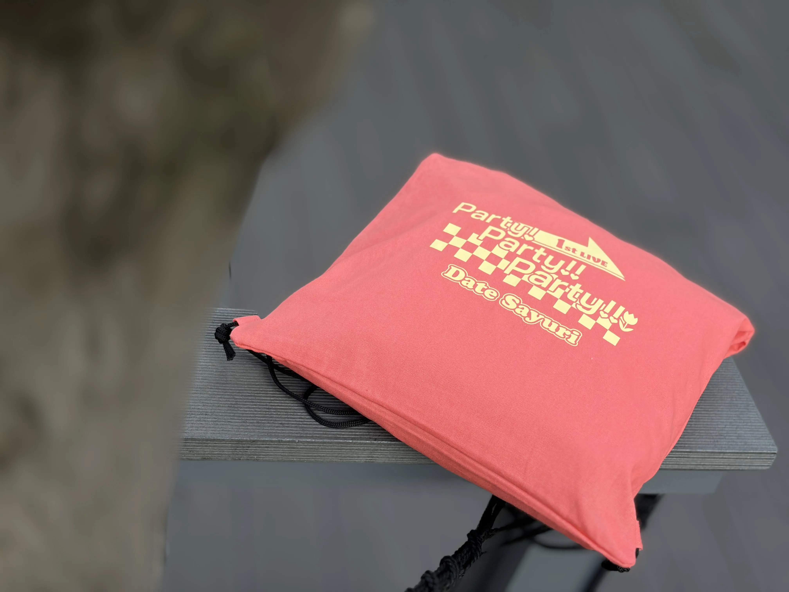
1日目は本当に最速先行で当選した整理番号なのか疑うほど後ろの方でしたが、知り合いのヲタクと連番できました。
右側に柵があり飛びやす…いや、見やすかったですね。実際、ど真ん中で見られたことには違いないので。
個人的にはピンクのドレス姿の推しが可愛かったです。
曲に関してはリリースイベントで何度も聞いた曲もあれば、初めて聴くカバー曲もありレパートリーが豊かだなあと感じました。
ロックからまったりした曲まで、幅広いジャンルを詰め込んだ1stアルバムの雰囲気を踏襲しているようにも感じました。
因みに僕のイチオシ曲はモチロン「自LOVE♡♡」です。
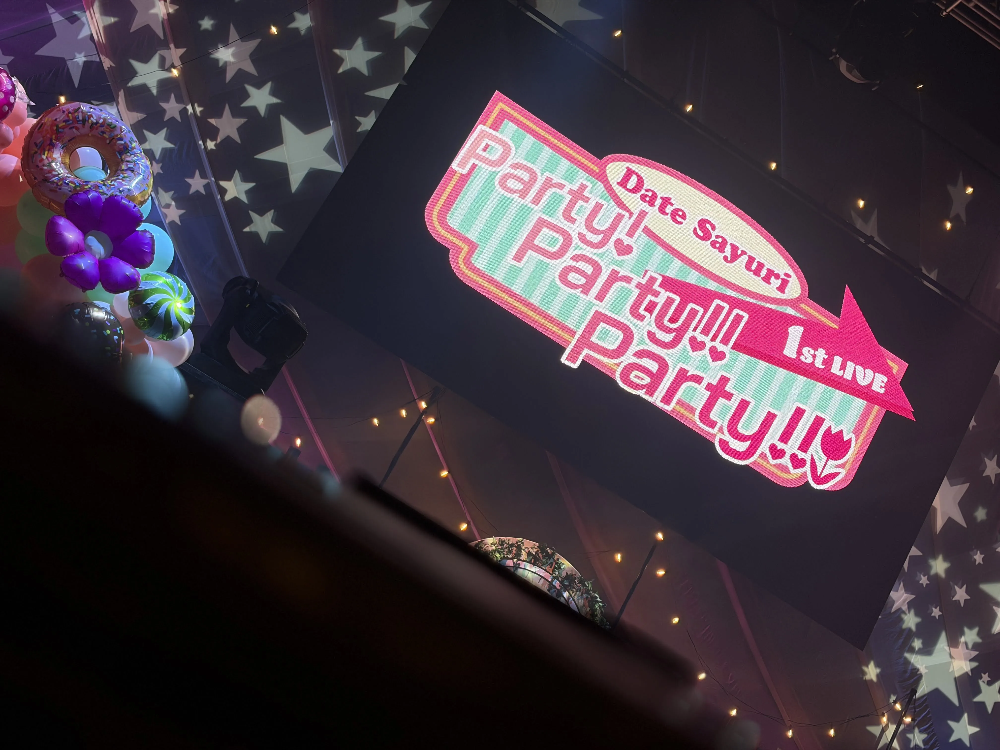
2日目、同じく六本木駅。
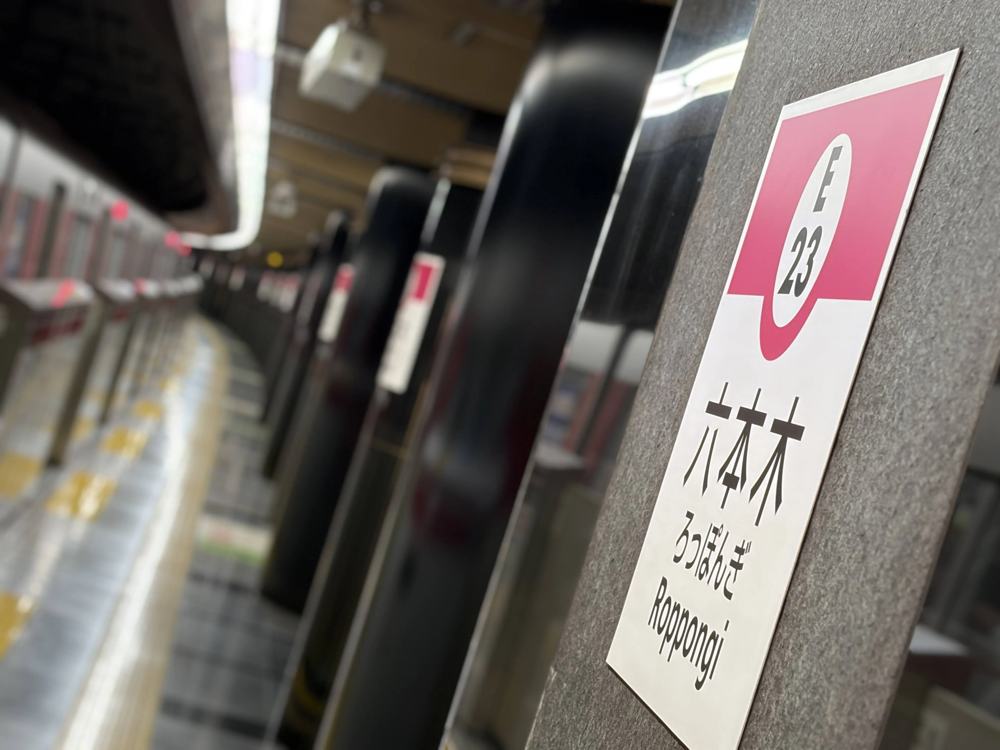
会場前ですね。
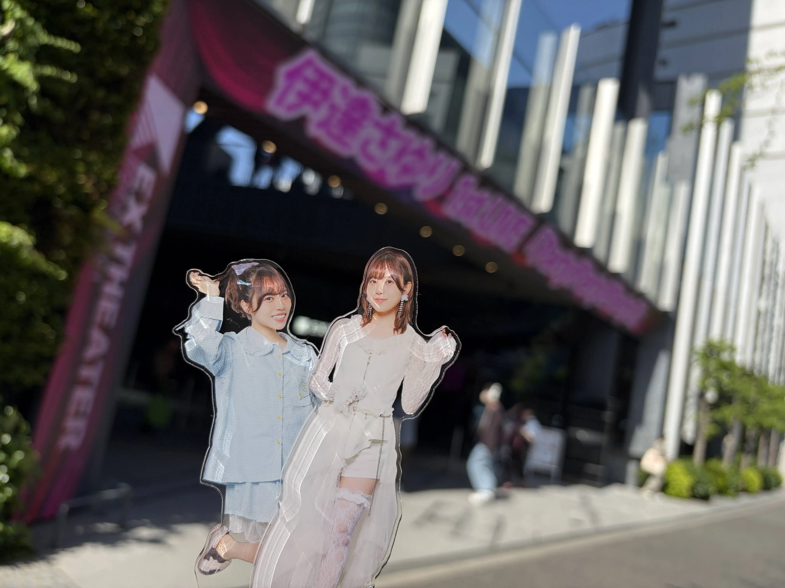
2日目は最速先行にしては悪くない整理番号で、そこそこ前の方を狙えそうな位置でした。
ということで、入場後は爆速で前方へ向かい、先に入場していたヲタクたちの間に入れさせてもらいました。
かなり前の方だったので、2日目は推しからたくさんレスをもらえました。中でも「自LOVE♡♡」の披露中には、電話をかけるような振り付けがありますが、そこでなんとタイミングがシンクロし、推しと「もしもし」できました。
1日目と基本的にセットリストは変わらなかったのですが、最後の「だってだってだってだって〜」が「自LOVE♡♡」に変更になっていました。
最後には、次のイベントとなるファンミーティングツアーの発表もありました。
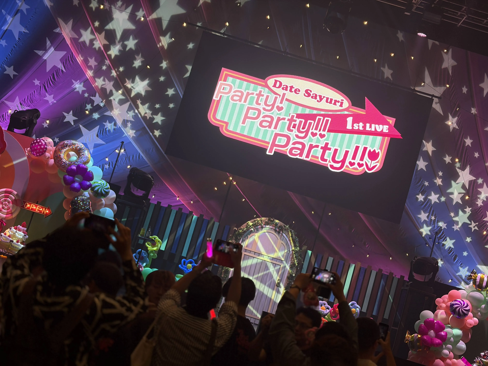
2日間、とても楽しいPartyでした。また次のファンミも楽しみです。